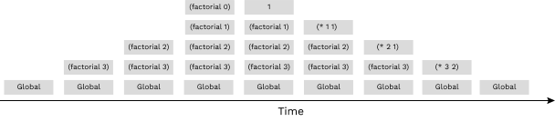

Discussion 11: Interpreters, Tail Calls
Tail Recursion
When writing a recursive procedure, it's possible to write it in a tail recursive way, where all of the recursive calls are tail calls. A tail call occurs when a function calls another function as the last action of the current frame.
Consider this implementation of factorial that is not tail recursive:
(define (factorial n)
(if (= n 0)
1
(* n (factorial (- n 1)))))The recursive call occurs in the last line, but it is not the last expression
evaluated. After calling (factorial (- n 1)), the function still needs to
multiply that result with n. The final expression that is evaluated is
a call to the multiplication function, not factorial itself. Therefore,
the recursive call is not a tail call.
Here's a visualization of the recursive process for computing (factorial 6) :
(factorial 6)
(* 6 (factorial 5))
(* 6 (* 5 (factorial 4)))
(* 6 (* 5 (* 4 (factorial 3))))
(* 6 (* 5 (* 4 (* 3 (factorial 2)))))
(* 6 (* 5 (* 4 (* 3 (* 2 (factorial 1))))))
(* 6 (* 5 (* 4 (* 3 (* 2 1)))))
(* 6 (* 5 (* 4 (* 3 2))))
(* 6 (* 5 (* 4 6)))
(* 6 (* 5 24))
(* 6 120)
720The interpreter first must reach the base case and only then can it begin to calculate the products in each of the earlier frames.
We can rewrite this function using a helper function that remembers the temporary product that we have calculated so far in each recursive step.
(define (factorial n)
(define (fact-tail n result)
(if (= n 0)
result
(fact-tail (- n 1) (* n result))))
(fact-tail n 1))fact-tail makes a single recursive call to fact-tail, and
that recursive call is the last expression to be evaluated, so it is a tail
call. Therefore, fact-tail is a tail recursive process.
Here's a visualization of the tail recursive process for computing (factorial 6):
(factorial 6)
(fact-tail 6 1)
(fact-tail 5 6)
(fact-tail 4 30)
(fact-tail 3 120)
(fact-tail 2 360)
(fact-tail 1 720)
(fact-tail 0 720)
720The interpreter needed less steps to come up with the result, and it didn't need to re-visit the earlier frames to come up with the final product.
Tail Call Optimization
When a recursive procedure is not written in a tail recursive way, the interpreter must have enough memory to store all of the previous recursive calls.
For example, a call to the (factorial 3) in the non tail-recursive version
must keep the frames for all the numbers from 3 down to the base case,
until it's finally able to calculate the intermediate products and forget those frames:

For non tail-recursive procedures, the number of active frames grows proportionally to the number
of recursive calls. That may be fine for small inputs, but imagine calling factorial
on a large number like 10000. The interpreter would need enough memory for all 1000 calls!
Fortunately, proper Scheme interpreters implement tail-call optimization as a requirement of the language specification. TCO ensures that tail recursive procedures can execute with a constant number of active frames, so programmers can call them on large inputs without fear of exceeding the available memory.
When the tail recursive factorial is run in an interpreter with tail-call optimization,
the interpreter knows that it does not need to keep the previous frames around,
so it never needs to store the whole stack of frames in memory:

Tail-call optimization can be implemented in a few ways:
- Instead of creating a new frame, the interpreter can just update
the values of the relevant variables in the current frame (like
nandresultfor thefact-tailprocedure). It reuses the same frame for the entire calculation, constantly changing the bindings to match the next set of parameters. - How our 61A Scheme interpreter works: The interpreter builds a new frame as usual, but then replaces the current frame with the new one. The old frame is still around, but the interpreter no longer has any way to get to it. When that happens, the Python interpreter does something clever: it recycles the old frame so that the next time a new frame is needed, the system simply allocates it out of recycled space. The technical term is that the old frame becomes "garbage", which the system "garbage collects" behind the programmer's back.
Tail Context
When trying to identify whether a given function call within the body of a function is a tail call, we look for whether the call expression is in tail context.
Given that each of the following expressions is the last expression in the body of the function, the following expressions are tail contexts:
- the second or third operand in an
ifexpression - any of the non-predicate sub-expressions in a
condexpression (i.e. the second expression of each clause) - the last operand in an
andor anorexpression - the last operand in a
beginexpression's body - the last operand in a
letexpression's body
For example, in the expression (begin (+ 2 3) (- 2 3) (* 2 3)),
(* 2 3) is a tail call because it is the last operand expression to be
evaluated.
Tail calls
Q1: Is Tail Call
For each of the following procedures, identify whether it contains a recursive call in a tail context. Also indicate if it uses a constant number of active frames.
(define (question-a x)
(if (= x 0) 0
(+ x (question-a (- x 1)))))(define (question-b x y)
(if (= x 0) y
(question-b (- x 1) (+ y x))))(define (question-c x y)
(if (> x y)
(question-c (- y 1) x)
(question-c (+ x 10) y)))(define (question-d n)
(if (question-d n)
(question-d (- n 1))
(question-d (+ n 10))))(define (question-e n)
(cond ((<= n 1) 1)
((question-e (- n 1)) (question-e (- n 2)))
(else (begin (print 2) (question-e (- n 3))))))Q2: Sum
Write a tail recursive function that takes in a Scheme list and returns the numerical sum of all values in the list. You can assume that the list contains only numbers (no nested lists).
scm> (sum '(1 2 3))
6
scm> (sum '(10 -3 4))
11Q3: Reverse
Write a tail-recursive function reverse that takes in a Scheme list a
returns a reversed copy. Hint: use a helper function!
scm> (reverse '(1 2 3))
(3 2 1)
scm> (reverse '(0 9 1 2))
(2 1 9 0)Calculator
An interpreter is a program that understands other programs. Today, we will explore how to build an interpreter for Calculator, a simple language that uses a subset of Scheme syntax.
The Calculator language includes only the four basic arithmetic operations: +, -, *, and /. These operations can be nested and can take any numbers of arguments. A few examples of calculator expressions and their corresponding values are shown below.
calc> (+ 2 2)
4
calc> (- 5)
-5
calc> (* (+ 1 2) (+ 2 3))
15The reader component of an interpreter parses input strings and represents them as data structures in the implementing language. In this case, we need to represent Calculator expressions as Python objects. To represent numbers, we can just use Python numbers. To represent the names of the arithmetic procedures, we can use Python strings (e.g. '+').
To represent Scheme lists in Python, we will use the Pair class. A Pair instance holds exactly two elements. Accordingly, the Pair constructor takes in two arguments, and to make a list we must nest calls to the constructor and pass in nil as the second element of the last pair. Note that in the Python code, nil is bound to a special user-defined object that represents an empty list, whereas nil in Scheme is actually an empty list.
>>> Pair('+', Pair(2, Pair(3, nil)))
Pair('+', Pair(2, Pair(3, nil)))Each Pair instance has two instance attributes: first and rest, which are bound to the first and second elements of the pair respectively.
>>> p = Pair('+', Pair(2, Pair(3, nil)))
>>> p.first
'+'
>>> p.rest
Pair(2, Pair(3, nil))
>>> p.rest.first
2Pair is very similar to Link, the class we developed for representing linked lists -- they have the same attribute names first and rest and are represented very similarly.
Here's an implementation of what we described:
class Pair:
"""Represents the built-in pair data structure in Scheme."""
def __init__(self, first, rest):
self.first = first
if not scheme_valid_cdrp(rest):
raise SchemeError("cdr can only be a pair, nil, or a promise but was {}".format(rest))
self.rest = rest
def map(self, fn):
"""Maps fn to every element in a list, returning a new
Pair.
>>> Pair(1, Pair(2, Pair(3, nil))).map(lambda x: x * x)
Pair(1, Pair(4, Pair(9, nil)))
"""
assert isinstance(self.rest, Pair) or self.rest is nil, \
"rest element in pair must be another pair or nil"
return Pair(fn(self.first), self.rest.map(fn))
def __repr__(self):
return 'Pair({}, {})'.format(self.first, self.rest)class nil:
"""Represents the special empty pair nil in Scheme."""
def map(self, fn):
return nil
def __getitem__(self, i):
raise IndexError('Index out of range')
def __repr__(self):
return 'nil'
nil = nil() # this hides the nil class *forever*Q4: Using Pair
Answer the following questions about a Pair instance
representing the Calculator expression (+ (- 2 4) 6 8).
Write out the Python expression that returns a Pair representing the given expression:
What is the operator of the call expression?
If the Pair you constructed in the previous part was bound to the name p,
how would you retrieve the operator?
What are the operands of the call expression?
If the Pair you constructed was bound to the name p, how would
you retrieve a list containing all of the operands?
How would you retrieve only the first operand?
Q5: New Procedure
Suppose we want to add the // operation to our Calculator interpreter. Recall from Python that // is the floor division operation, so we are looking to add a built-in procedure // in our interpreter such that (// dividend divisor) returns dividend // divisor. Similarly we handle multiple inputs as illustrated in the following example (// dividend divisor1 divisor2 divisor3) evaluates to (((dividend // divisor1) // divisor2) // divisor3). For this problem you can assume you are always given at least 1 divisor. Also for this question do you need to call calc_eval inside floor_div? Why or why not?
calc> (// 1 1)
1
calc> (// 5 2)
2
calc> (// 28 (+ 1 1) 1)
14Q6: New Form
Suppose we want to add handling for comparison operators >,
<, and = as well as and expressions to our
Calculator interpreter. These should work the same way they do in Scheme.
calc> (and (= 1 1) 3)
3
calc> (and (+ 1 0) (< 1 0) (/ 1 0))
#fi. Are we able to handle expressions containing the comparison operators
(such as <, >, or =) with the existing implementation of calc_eval?
Why or why not?
ii. Are we able to handle and expressions with the existing
implementation of calc_eval? Why or why not?
Hint: Think about the rules of evaluation we've implemented in
calc_eval. Is anything different aboutand?
iii. Now, complete the implementation below to handle and
expressions. You may assume the conditional operators (e.g. <, >,
=, etc) have already been implemented for you.
Q7: Saving Values
In the last few questions we went through a lot of effort to add operations so we can do most arithmetic operations easily. However it's a real shame we can't store these values. So for this question let's implement a define special form that saves values to variable names. This should work like variable assignment in Scheme; this means that you should expect inputs of the form(define <variable_name> <value>) and these inputs should return the symbol corresponding to the variable name.
calc> (define a 1)
a
calc> a
1This is a more involved change. Here are the 4 steps involved:
- Add a
bindingsdictionary that will store the names and correspondings values of variables as key-value pairs of the dictionary. - Identify when the define form is given to
calc_eval. - Allow variables to be looked up in
calc_eval. - Write the function
eval_definewhich should actually handle adding names and values to the bindings dictionary.
We've done step 1 for you. Now you'll do the remaining steps in the code below.
Run in 61A CodeQ8: Counting Eval and Apply
How many calls to calc_eval and calc_apply would it
take to evaluate each of the following Calculator expressions?
scm> (+ 1 2)
For this particular prompt please list out the inputs to calc_eval and calc_apply.
scm> (+ 2 4 6 8)
scm> (+ 2 (* 4 (- 6 8)))
scm> (and 1 (+ 1 0) 0)
Q9: From Pair to Calculator
Write out the Calculator expression with proper syntax that
corresponds to the following Pair constructor calls.
>>> Pair('+', Pair(1, Pair(2, Pair(3, Pair(4, nil)))))>>> Pair('+', Pair(1, Pair(Pair('*', Pair(2, Pair(3, nil))), nil)))